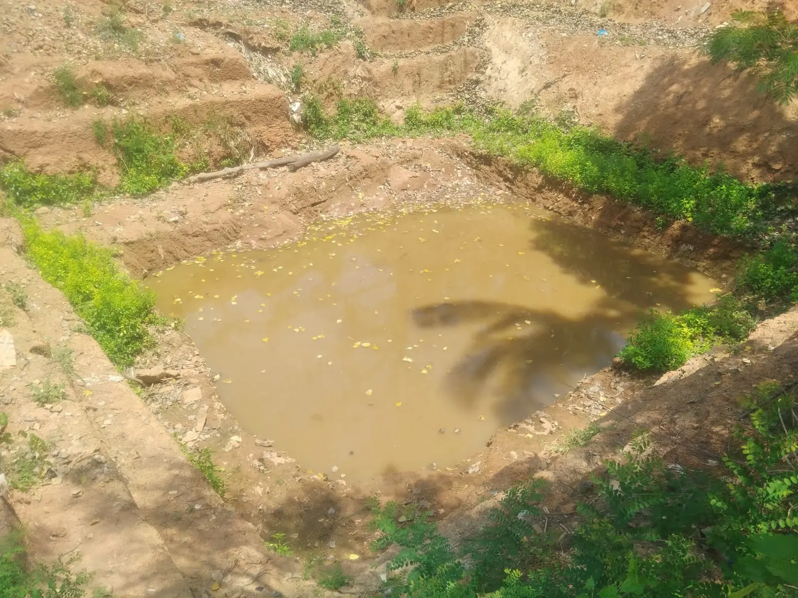
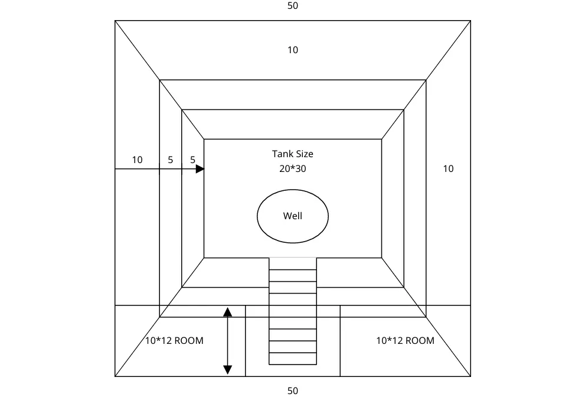

Structural Engineering for
when the ground moves.
RC frame and steel structure design for residential buildings, industrial sheds, and specialist structures — compliant with Indian seismic codes, verified in ETABS, and delivered as certified good-for-construction drawings.

From brief to certified drawings — without subcontracting a line.
Every structural design at Gridline is executed by the founding engineers themselves. No junior drafters. No outsourced analysis. The engineer who runs the ETABS model is the engineer who signs the drawing — and the engineer who answers your site queries.
We serve residential owners, industrial clients, and institutional bodies across Assam, Karnataka, and Gujarat. Remote project delivery with digital drawings and clear communication.
Site Brief & Load Derivation
Dead, live, wind, and seismic loads per IS 875 and IS 1893:2016. Soil report review and safe bearing capacity confirmation per IS 1904.
3D Structural Analysis — ETABS + STAAD.Pro
Full 3D frame model built in ETABS for primary analysis. All critical members independently cross-verified in STAAD.Pro. Governing load combination member forces then hand-checked against IS code first principles before design proceeds.
Beam, Column & Slab Design
IS 456:2000 RC design for all structural members. IS 800:2007 steel member design with member utilisation check. SP-16 design aids applied where applicable.
Foundation Design
Isolated, combined, and strap footing design against SBC and IS 1904 settlement limits. Differential settlement analysis for alluvial and high water-table sites.
GFC Drawings & Bar Bending Schedule
Certified good-for-construction structural drawings in AutoCAD. Complete BBS for all RC members. Drawings formatted for local authority permit submission.
Site Query Resolution
Ongoing structural support during construction — revised details, site modification assessments, and ductile detailing compliance verification per IS 13920.
Three structures. Three different challenges.

G+1 Steel Truss Industrial Shed
Badarpurghat, Assam
IS 800:2007-compliant structural design for a G+1 steel truss industrial shed with mezzanine office floor. 54ft × 72ft plan, 7.62m eave height, 32.62T total steel. Designed in ETABS with custom Python automation for member optimisation — 15–25% leaner than template-based approaches. Seismic Zone V, alluvial foundation design per IS 1904.
View Full Project
B+G+4 Multi-Storey Residential
Udupi, Karnataka
IS 456:2000-compliant RC frame structural design for a Basement + Ground + 4 upper floor residential building in coastal Karnataka. 4,326 sqft built-up area. Coastal exposure class applied — M25 minimum concrete, 50mm cover throughout. Full structural drawings issued.
View Full Project
Temple Pushakarini Ghat Steps
Udupi, Karnataka
Engineered stepped retaining structure for a temple sacred pond (pushakarini). Stone block masonry with geotextile drainage layer and PVC gabion mesh. Design driven by permanent hydrostatic pressure, wave action, and cultural material requirements.
View Full Project





Engineering articles written by the engineers who design.
Zone V Seismic Ductile Detailing
Why cheap contractor bids in Seismic Zone V mean compromised IS 13920 ductile detailing — wrong stirrup spacing, 90° hooks, missing cover — and what structural failure actually looks like.
Preventing Differential Settlement in Alluvial Soils
How rigorous SBC assessment and IS 1904 settlement analysis at the Badarpurghat steel shed prevented the silent structural failure that saturated Assam soils produce — and nobody photographs.
Computational Optimisation for Steel Tonnage
How ETABS-based automation and dynamic linear interpolation eliminate 15–25% steel over-reinforcement from template-designed industrial sheds — demonstrated on the 32.62T Badarpurghat project.
The founding engineers who do the work.

Extensive on-ground site experience in tall structures and large-scale multi-storey developments. Specialises in lateral load design and performance-based engineering using ETABS, IS 1893 seismic codes. Led structural design for the B+G+4 Udupi residential project.

Specialises in industrial and commercial steel structure design per IS 800:2007 and IS 875. Deep led the Badarpurghat G+1 steel shed structural analysis — including custom Python automation for member optimisation that delivered a 32.62T design against typical template outputs of 38–40T.

Specialist in RC beam and frame design per IS 456:2000 and SP-16. Direct on-ground expertise in Seismic Zone V construction conditions — alluvial foundations, high water tables, and IS 13920 ductile detailing enforcement. Led structural and foundation design for the Udupi temple retaining structure.
Questions clients always ask.
Full structural design for RC frame buildings (IS 456:2000), industrial steel sheds (IS 800:2007), foundation design (IS 1904), seismic analysis per IS 1893:2016, retaining structures, and bar bending schedules. All analysis in ETABS. Engineer-certified GFC drawings delivered.
Yes — this is our home territory. Our Guwahati co-founder has direct experience in Assam's construction conditions: alluvial foundations, high water tables, and IS 13920 ductile detailing compliance. We have completed industrial and heritage structure designs in Assam.
Fees are project-specific — based on built-up area, number of floors, structural complexity, and scope. Contact us at gridline.eng.const@gmail.com with your brief for a fee estimate. We provide transparent, itemised fee proposals before any engagement begins.
Yes. We deliver engineer-certified GFC structural drawings suitable for local authority permit submission — foundation plan, column layout, beam and slab schedules, staircase details, and complete BBS. Remote delivery with full drawing revision support.
Yes. We provide structural assessments of existing RC and steel structures — reviewing as-built drawings, identifying deficiencies, and providing remediation recommendations. Particularly relevant for structures in Seismic Zone V where IS 13920 compliance is critical.
How much does structural engineering cost in India?
Fee models, cost drivers, and what is included — explained clearly.
Tell us what you're
building.
Send us your brief — site location, building type, approximate area, and timeline. We respond within 24 hours with a project assessment and fee indication.